library(tidyverse)
library(easystats)
library(patchwork)
library(ggside)
library(ggdist)
df <- read.csv("../data/rawdata_participants.csv")
dftask <- read.csv("../data/rawdata_task.csv")FakeArt - Data Cleaning
Data Preparation
Recruitment History
Code
# Consecutive count of participants per day (as area)
df |>
mutate(Date = as.Date(Experiment_StartDate, format = "%Y-%m-%d %H:%M:%S")) |>
summarize(N = n(), .by=c("Date", "Recruitment")) |>
complete(Date, Recruitment, fill = list(N = 0)) |>
mutate(N = cumsum(N), .by="Recruitment") |>
ggplot(aes(x = Date, y = N)) +
geom_area(aes(fill=Recruitment)) +
scale_y_continuous(expand = c(0, 0)) +
labs(
title = "Recruitment History",
x = "Date",
y = "Total Number of Participants"
) +
see::theme_modern()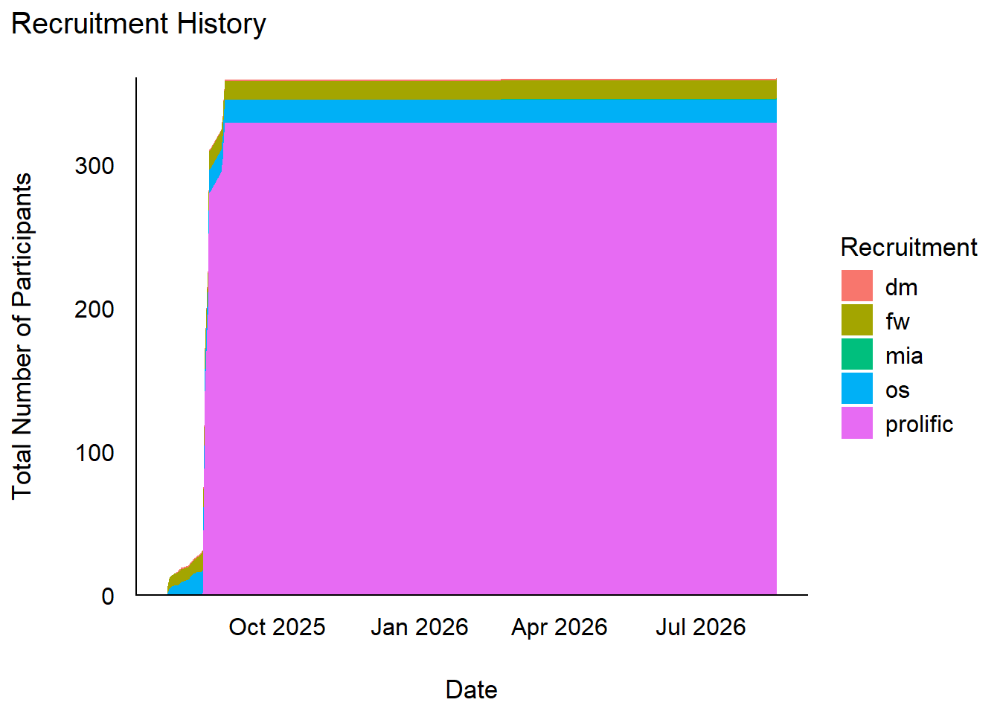
Code
# Table
summarize(df, N = n(), .by=c("Recruitment")) |>
arrange(desc(N)) |>
gt::gt() |>
gt::grand_summary_rows(columns = "N", fns = Total ~ sum(.)) |>
gt::opt_stylize(style = 2, color = "gray") |>
gt::tab_header("Number of participants per recruitment source") | Number of participants per recruitment source | ||
| Recruitment | N | |
|---|---|---|
| prolific | 329 | |
| os | 16 | |
| fw | 13 | |
| dm | 1 | |
| Total | — | 359 |
Experiment Feedback
Experiment Enjoyment
Code
df |>
summarise(n = n(), .by=c("Experiment_Enjoyment")) |>
filter(!is.na(Experiment_Enjoyment)) |>
mutate(n = n / sum(n),
Experiment_Enjoyment = fct_rev(as.factor(Experiment_Enjoyment))) |>
ggplot(aes(y = n, x = 1, fill = Experiment_Enjoyment)) +
geom_bar(stat="identity", position="stack") +
scale_fill_manual(values=c("green", "yellowgreen", "yellow", "orange", "red")) +
coord_flip() +
scale_x_continuous(expand=c(0, 0)) +
scale_y_continuous(labels = scales::percent) +
labs(title="Experiment Enjoyment",
subtitle="Proportion of participants by condition") +
guides(fill = guide_legend(reverse=TRUE)) +
theme_minimal() +
theme(
axis.title = element_blank(),
axis.text.y = element_blank(),
panel.grid.major.y = element_blank(),
panel.grid.minor.y = element_blank(),
legend.position = "top",
legend.title = element_blank()) 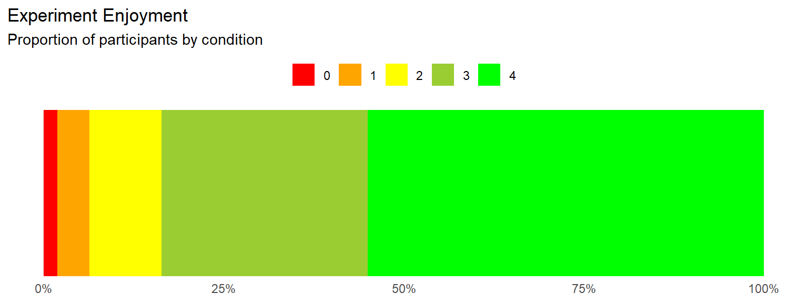
Task Feedback
Code
dat <- df |>
select(starts_with("Feedback"), -contains("Confidence")) |>
pivot_longer(everything(), names_to = "Question", values_to = "Answer") |>
group_by(Question, Answer) |>
summarise(prop = n()/nrow(df), .groups = 'drop') |>
complete(Question, Answer, fill = list(prop = 0)) |>
filter(Answer == TRUE) |>
mutate(Question = str_remove(Question, "Feedback_"),
Question = str_replace(Question, "LabelsNotMatched", "Labels did not always match the images"),
Question = str_replace(Question, "LabelsReversed", "Labels were Reversed"),
# Question = str_replace(Question, "DiffNone", "No Difference Real/AI"),
# Question = str_replace(Question, "DiffObvious", "Obvious Difference Real/AI"),
# Question = str_replace(Question, "DiffSubtle", "Subtle Difference Real/AI"),
# Question = str_replace(Question, "AILessAttractive", "AI = less attractive"),
# Question = str_replace(Question, "AIMoreAttractive", "AI = more attractive"),
# Question = str_replace(Question, "SomeFacesAttractive", "Some Faces Attractive"),
Question = str_replace(Question, "GoodForgeries", "Forgeries very convincing and hard to distinguish"),
Question = str_replace(Question, "BadForgeries", "Forgeries were less well executed")) |>
mutate(Question = fct_reorder(Question, desc(prop)))
dat |>
ggplot(aes(x = Question, y = prop)) +
geom_bar(stat = "identity") +
scale_y_continuous(expand = c(0, 0), breaks= scales::pretty_breaks(), labels=scales::percent) +
labs(x="Feedback", y = "Participants", title = "Feedback") +
theme_minimal() +
theme(
plot.title = element_text(size = rel(1.2), face = "bold", hjust = 0),
plot.subtitle = element_text(size = rel(1.2), vjust = 7),
axis.text.y = element_text(size = rel(1.1)),
axis.text.x = element_text(size = rel(1.1), angle = 90, hjust = 1),
axis.title.x = element_blank()
)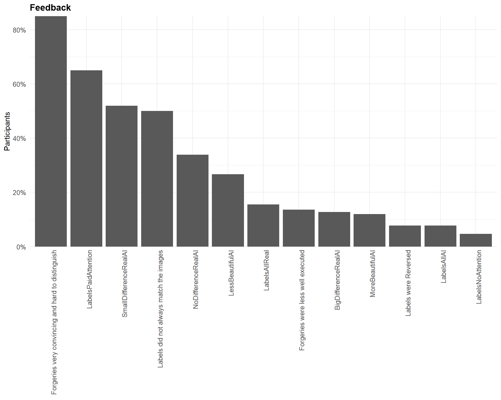
Code
dat |>
select(Question, prop) |>
arrange(desc(prop)) |>
mutate(prop = format_percent(prop)) |>
gt::gt() |>
gt::opt_stylize() |>
gt::tab_header("Proportion of participants who answered 'yes' to each question") |>
gt::cols_label(prop = "Proportion of participants who answered 'Yes'")| Proportion of participants who answered 'yes' to each question | |
| Question | Proportion of participants who answered 'Yes' |
|---|---|
| Forgeries very convincing and hard to distinguish | 84.96% |
| LabelsPaidAttention | 64.90% |
| SmallDifferenceRealAI | 52.09% |
| Labels did not always match the images | 50.14% |
| NoDifferenceRealAI | 33.98% |
| LessBeautifulAI | 26.46% |
| LabelsAllReal | 15.60% |
| Forgeries were less well executed | 13.65% |
| BigDifferenceRealAI | 12.81% |
| MoreBeautifulAI | 11.98% |
| LabelsAllAI | 7.80% |
| Labels were Reversed | 7.80% |
| LabelsNoAttention | 4.74% |
Code
dat <- df |>
select(starts_with("Feedback"), -contains("Confidence")) |>
mutate_all(~ifelse(.==TRUE, 1, 0)) |>
correlation(method="tetrachoric", redundant = TRUE) |>
correlation::cor_sort() |>
correlation::cor_lower() |>
mutate(val = paste0(insight::format_value(rho, zap_small=TRUE), format_p(p, stars_only=TRUE))) |>
mutate(Parameter2 = fct_rev(Parameter2)) |>
mutate(Parameter1 = fct_relabel(Parameter1, \(x) str_remove_all(x, "Feedback_")),
Parameter2 = fct_relabel(Parameter2, \(x) str_remove_all(x, "Feedback_")))
dat |>
ggplot(aes(x=Parameter1, y=Parameter2)) +
geom_tile(aes(fill = rho), color = "white") +
geom_tile(data=filter(dat, Parameter1 == "LessBeautifulAI" & Parameter2 == "BigDifferenceRealAI"), color = "red", alpha = 0, linewidth=1) +
geom_tile(data=filter(dat, Parameter1 == "LabelsPaidAttention" & Parameter2 == "LessBeautifulAI"), color = "red", alpha = 0, linewidth=1) +
geom_tile(data=filter(dat, Parameter1 == "LabelsPaidAttention" & Parameter2 == "LabelsNotMatched"), color = "red", alpha = 0, linewidth=1) +
geom_tile(data=filter(dat, Parameter1 == "LabelsNoAttention" & Parameter2 == "LessBeautifulAI"), color = "red", alpha = 0, linewidth=1) +
geom_text(aes(label = val), size = 3) +
labs(title = "Feedback Co-occurence Matrix") +
scale_fill_gradient2(
low = "#2196F3",
mid = "white",
high = "#F44336",
breaks = c(-1, 0, 1),
guide = guide_colourbar(ticks=FALSE),
midpoint = 0,
na.value = "grey85",
limit = c(-1, 1)) +
theme_minimal() +
theme(legend.title = element_blank(),
axis.title.x = element_blank(),
axis.title.y = element_blank(),
axis.text.x = element_text(angle = 45, hjust = 1))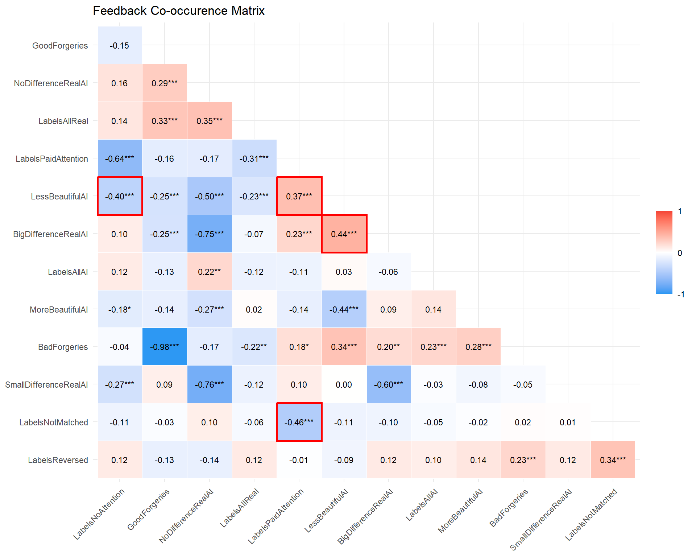
- The more people paid attention to the labels, the stronger the self-reported anti-fake bias.
- The more people paid attention, the less likely to report that labels were not matched.
Dimension Computation
Code
# Should we re-map the Worth values? -----------------------------------
# Re-map to values in dollars
# alldata_task$Worth2 <- ifelse(alldata_task$Worth == 1, 10, alldata_task$Worth)
# alldata_task$Worth2 <- ifelse(alldata_task$Worth2 == 2, 100, alldata_task$Worth2)
# alldata_task$Worth2 <- ifelse(alldata_task$Worth2 == 3, 1000, alldata_task$Worth2)
# alldata_task$Worth2 <- ifelse(alldata_task$Worth2 == 4, 10000, alldata_task$Worth2)
# alldata_task$Worth2 <- ifelse(alldata_task$Worth2 == 5, 100000, alldata_task$Worth2)
#
# library(tidyverse)
#
# t <- as.data.frame(table(alldata_task$Worth))
# cor.test(as.numeric(as.character(t$Var1)), t$Freq)
# t <- as.data.frame(table(log1p(alldata_task$Worth2)))
# cor.test(as.numeric(as.character(t$Var1)), t$Freq)
#
# ggplot(alldata_task, aes(x=Worth)) +
# geom_bar() +
# geom_abline()
# ggplot(alldata_task, aes(x=log1p(Worth2))) +
# geom_bar()
# ggplot(alldata_task, aes(x=Worth2)) +
# geom_bar() +
# scale_x_continuous(transform = "log1p", breaks = c(0, 10, 100, 1000, 10000, 100000))
# ggplot(alldata_task, aes(x=Worth, y=Beauty)) +
# geom_smooth(method = "lm") +
# geom_jitter(height=0)
# ggplot(alldata_task, aes(x=Worth2, y=Beauty)) +
# geom_smooth(method = "lm") +
# geom_jitter(height=0) +
# scale_x_continuous(transform = "log1p", breaks = c(0, 10, 100, 1000, 10000, 100000))
# summary(lm(Beauty ~ Worth, data = alldata_task))
# summary(lm(Beauty ~ log1p(Worth2), data = alldata_task))MINT
Code
compute_and_remove <- function(df, name="BodyAwareness", pattern=name, method="mean") {
items <- select(df, starts_with(pattern), -contains("AttentionCheck"))
df <- df[!names(df) %in% names(items)]
if(method == "mean") {
df[[name]] <- rowMeans(items, na.rm=TRUE)
} else {
df[[name]] <- rowSums(items, na.rm=TRUE)
}
df
}df <- compute_and_remove(df, name="MINT_Card", method="mean")
df <- compute_and_remove(df, name="MINT_Urin", method="mean")
df <- compute_and_remove(df, name="MINT_SexS", method="mean")
df <- compute_and_remove(df, name="MINT_Gast", method="mean")
df <- compute_and_remove(df, name="MINT_Olfa", method="mean")
df <- compute_and_remove(df, name="MINT_Derm", method="mean")
df <- compute_and_remove(df, name="MINT_ExAc", method="mean")
df <- compute_and_remove(df, name="MINT_RelA", method="mean")
df <- compute_and_remove(df, name="MINT_Resp", method="mean")
df <- compute_and_remove(df, name="MINT_Sati", method="mean")
df <- compute_and_remove(df, name="MINT_CaCo", method="mean")
# df[grepl("^MAIA_.*_R$", names(df))] <- 6 - df[grepl("^MAIA_.*_R$", names(df))] # Reverse
# df <- compute_and_remove(df, name="MAIA_AttentionRegulation", method="mean")VVIQ
Code
df <- compute_and_remove(df, name="VVIQ_Friend", method="mean")
df <- compute_and_remove(df, name="VVIQ_Sun", method="mean")
df <- compute_and_remove(df, name="VVIQ_Shop", method="mean")
df <- compute_and_remove(df, name="VVIQ_Country", method="mean")Cronbach’s alpha: 0.86
Code
df$VVIQ_Total = rowMeans(df[c("VVIQ_Friend", "VVIQ_Sun", "VVIQ_Shop", "VVIQ_Country")], na.rm = TRUE) |>
datawizard::reverse_scale() # Reverse the scale (e.g., 0–4 -> 4–0) so that higher = more vivid
df <- select(df, -VVIQ_Friend, -VVIQ_Sun, -VVIQ_Shop, -VVIQ_Country)BAIT
Code
df$BAIT_Negative <- rowMeans(select(df, BAIT_8_TextIssues, BAIT_2_ImagesIssues, BAIT_3_VideosIssues, BAIT_9_Dangerous, BAIT_13_ArtIssues), na.rm=TRUE)
df$BAIT_Positive <- rowMeans(select(df, BAIT_5_ImitatingReality, BAIT_12_Benefit, BAIT_4_VideosRealistic, BAIT_1_ImagesRealistic, BAIT_14_ArtRealistic, BAIT_6_EnvironmentReal, BAIT_7_TextRealistic), na.rm=TRUE)
df$BAIT_ArtRealistic <- rowMeans(select(mutate(df, BAIT_13_ArtIssues = abs(BAIT_13_ArtIssues - 6)), BAIT_13_ArtIssues, BAIT_14_ArtRealistic), na.rm=TRUE)
df$BAIT_Total <- rowMeans(select(mutate(df, BAIT_Negative = abs(BAIT_Negative - 6)), BAIT_Negative, BAIT_Positive), na.rm=TRUE)
df |>
select(starts_with("BAIT")) |>
mutate(BAIT_AI_Use = case_when(
BAIT_AI_Use == "Never" ~ 0,
BAIT_AI_Use == "A few times per month" ~ 1,
BAIT_AI_Use == "A few times per week" ~ 2,
BAIT_AI_Use == "Once a day" ~ 3,
BAIT_AI_Use == "A few times per day" ~ 4,
.default = NA
)) |>
correlation::correlation(redundant = TRUE) |>
correlation::cor_sort() |>
correlation::cor_lower() |>
summary() |>
plot(text = list(size = 2.5)) +
theme_minimal() +
theme(axis.text.x = element_text(angle = 45, hjust = 1))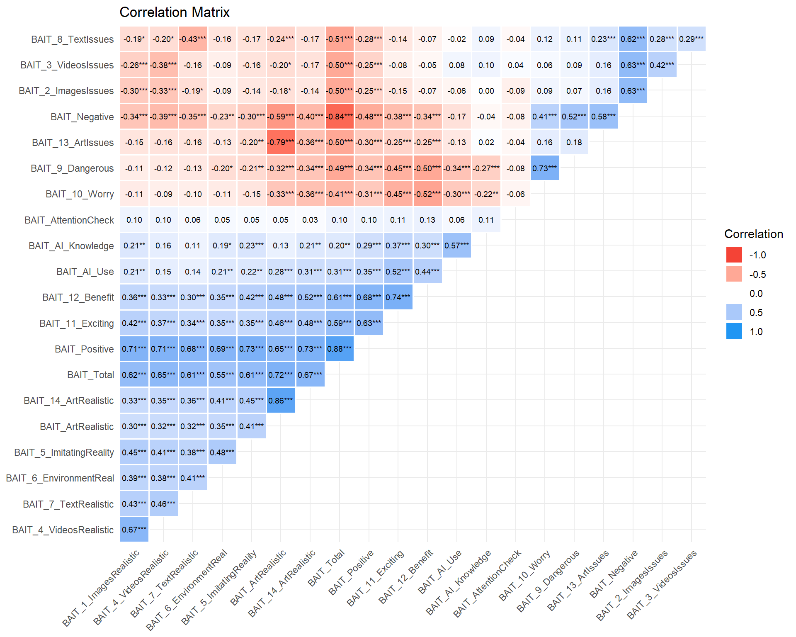
Code
df <- select(df, -matches("BAIT_[0-9]+_"))PHQ-4
Code
df <- compute_and_remove(df, name="PHQ4_Depression", method="mean")
df <- compute_and_remove(df, name="PHQ4_Anxiety", method="mean")Exclusions
Code
exclude <- list()Questionnaires
Code
m <- mgcv::gam(MINT_AttentionCheck ~ s(Duration_MINT),
data = mutate(df, MINT_AttentionCheck = ifelse(MINT_AttentionCheck != 0, 1, 0)), family = "binomial")
estimate_relation(m, length=50) |>
ggplot(aes(x = Duration_MINT, y = Predicted)) +
geom_ribbon(aes(ymin = CI_low, ymax = CI_high), alpha = 0.2) +
geom_line() +
theme_minimal() +
scale_y_continuous(labels = scales::percent) +
labs(title = "MINT Attention Check",
subtitle = "Predicted probability of failing attention check by duration",
x = "Duration (minutes)",
y = "Probability of failing attention check")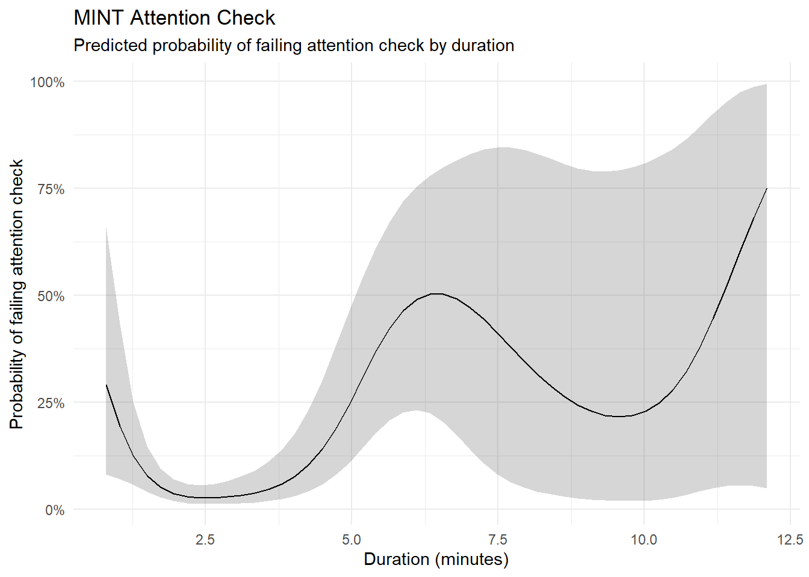
Code
# Contingency table for attention checks
# table(ifelse(df$MINT_AttentionCheck != 0, 1, 0), ifelse(df$BAIT_AttentionCheck != 6, 1, 0))
for(ppt in df$Participant) {
if(df[df$Participant == ppt, "MINT_AttentionCheck"] != 0) {
df[df$Participant == ppt, names(select(df, starts_with("MINT"), -MINT_AttentionCheck))] <- NA
df[df$Participant == ppt, names(select(df, starts_with("VVIQ")))] <- NA
}
if(df[df$Participant == ppt, "BAIT_AttentionCheck"] != 6) {
df[df$Participant == ppt, names(select(df, starts_with("BAIT"), -BAIT_AttentionCheck))] <- NA
}
}Attention Checks
Code
dfchecks <- data.frame(
Participant = df$Participant,
A_MINT = ifelse(df$MINT_AttentionCheck == 0, 0, 1),
A_BAIT = ifelse(df$BAIT_AttentionCheck == 6, 0, 1),
A_TASK = 1 - df$Task_AttentionCheck
)
summary(correlation(dfchecks))# Correlation Matrix (pearson-method)
Parameter | A_TASK | A_BAIT
----------------------------
A_MINT | 0.12 | 0.29***
A_BAIT | 0.10 |
p-value adjustment method: Holm (1979)Code
dfchecks |>
mutate(Total = round(A_TASK, 2)) |>
ggplot(aes(x = Total)) +
geom_bar(aes(fill = as.factor(Total))) +
scale_fill_viridis_d(guide = "none") +
scale_x_continuous(labels = scales::percent) +
labs(title = "Failed Attention Checks", y = "Number of Participants", subtitle = "Number of failed attention checks per participant") +
theme_modern(axis.title.space = 15) +
theme(
plot.title = element_text(size = rel(1.2), face = "bold", hjust = 0),
plot.subtitle = element_text(size = rel(1.2), vjust = 7),
axis.title.x = element_blank(),
)Warning: Removed 30 rows containing non-finite outside the scale range
(`stat_count()`).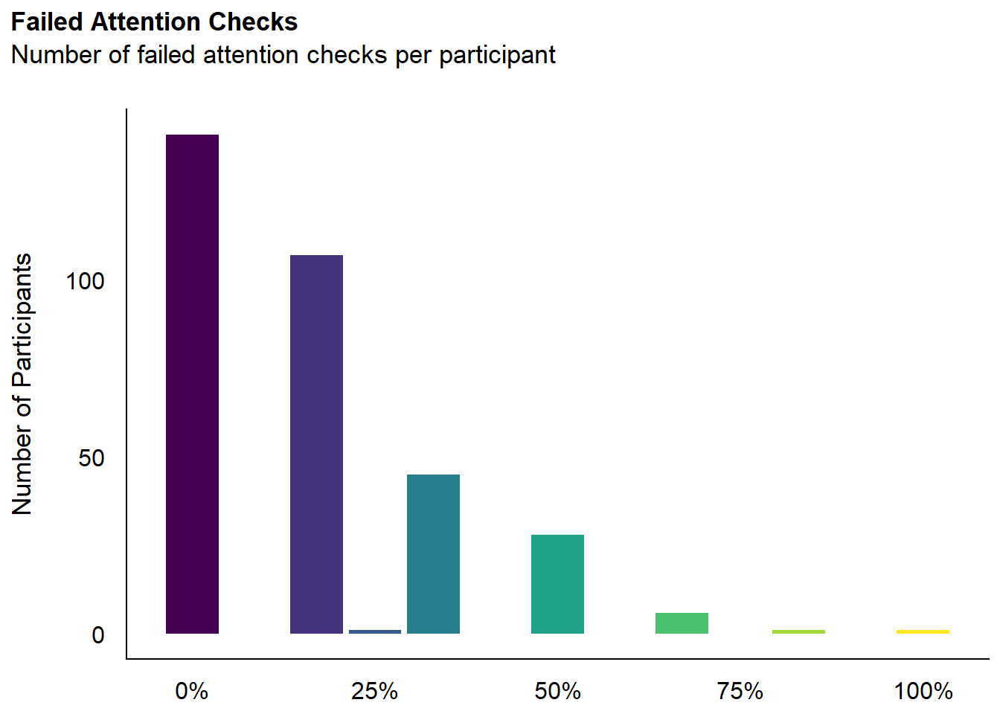
Code
exclude$checks <- as.character(na.omit(dfchecks[dfchecks$A_TASK >= 0.5, "Participant"]))We removed 36 (10.03%) participants for having failed at least 50% of attention checks.
Experiment Duration
Code
dfchecks$Duration_Experiment <- df |>
mutate(Version = ifelse(Recruitment == "prolific", "long", "short")) |>
mutate(Experiment_Duration = as.numeric(standardize(log(Experiment_Duration))), .by = "Version") |>
pull(Experiment_Duration)
dfchecks$Duration_Instructions1 <- standardize(log(df$Duration_TaskInstructions1))
dfchecks$Duration_Instructions2 <- standardize(log(df$Duration_TaskInstructions2))
m <- mgcv::gam(A_TASK ~ s(Duration_Experiment),
data = dfchecks[!is.na(dfchecks$A_TASK),], family = "quasibinomial")
estimate_relation(m, length=50) |>
ggplot(aes(x = Duration_Experiment, y = Predicted)) +
geom_ribbon(aes(ymin = CI_low, ymax = CI_high), alpha = 0.2) +
geom_line() +
geom_hline(yintercept=1/3, linetype="dashed", color="darkgrey") +
geom_vline(xintercept=3, linetype="dashed", color="red") +
theme_minimal() +
scale_y_continuous(labels = scales::percent) +
ggside::geom_xsidedensity(
data=mutate(dfchecks[!is.na(dfchecks$A_TASK),], AttentionCheckLabel = ifelse(A_TASK >= 0.5, "Failed 50% attention checks", "Valid")),
aes(fill=AttentionCheckLabel), alpha=0.3) +
ggside::theme_ggside_void() +
labs(title = "Experiment Duration",
subtitle = "Predicted probability of failing attention checks by duration",
x = "Experiment Duration (Z(log))",
y = "Probability of failing attention checks") Warning: `is.ggproto()` was deprecated in ggplot2 3.5.2.
ℹ Please use `is_ggproto()` instead.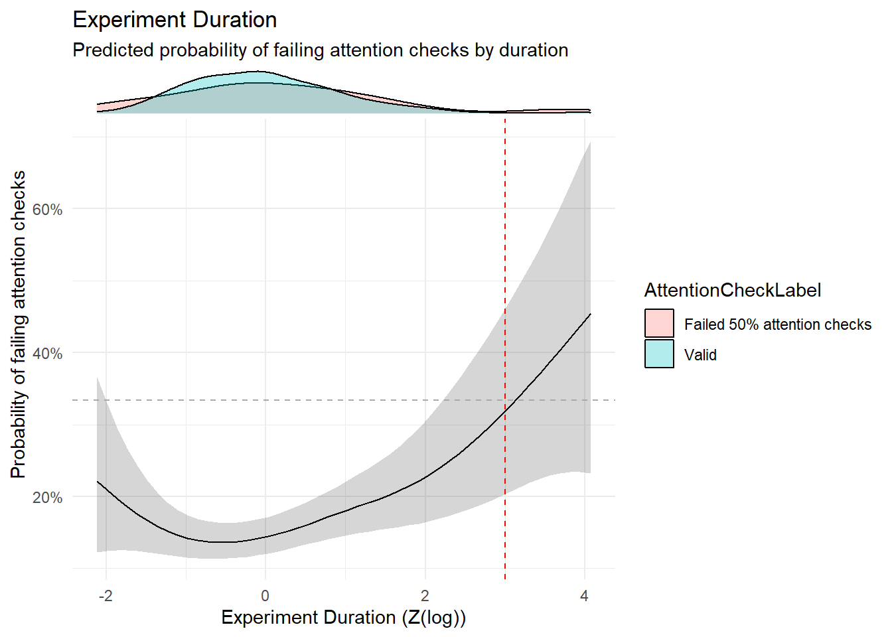
Code
exclude$duration <- as.character(dfchecks[dfchecks$Duration_Experiment > 3, "Participant"])
exclude$duration <- exclude$duration[!exclude$duration %in% exclude$checks]Response Consistency
Code
dftask |>
select(-starts_with("Screen"), -starts_with("Trial")) |>
correlation() |>
summary() |>
plot() +
theme_minimal() +
theme(axis.text.x = element_text(angle = 45, hjust = 1))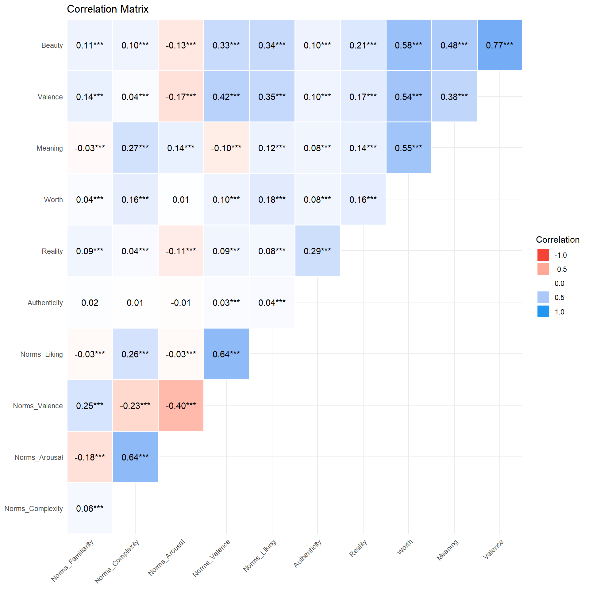
Code
dfchecks <- dftask |>
summarize(across(c("Beauty", "Valence", "Meaning", "Worth", "Reality"),
list(M = ~ mean(.x, na.rm = TRUE), SD = ~ sd(.x, na.rm = TRUE))),
cor_BeautyValence = cor(Beauty, Valence, method = "spearman"),
cor_MeaningWorth = cor(Meaning, Worth, method = "spearman"),
cor_BeautyNorm = cor(Beauty, Norms_Liking, method = "spearman"),
cor_ValenceNorm = cor(Valence, Norms_Valence, method = "spearman"),
.by = c("Participant")) |>
mutate(cor_BeautyValence = ifelse(is.na(cor_BeautyValence), -1, cor_BeautyValence),
cor_MeaningWorth = ifelse(is.na(cor_MeaningWorth), -1, cor_MeaningWorth),
cor_BeautyNorm = ifelse(is.na(cor_BeautyNorm), -1, cor_BeautyNorm)) |>
full_join(dfchecks, by = "Participant", keep = FALSE)Anomaly Score
Code
features <- dfchecks |>
mutate(A_QUESTIONNAIRES = (A_MINT + A_BAIT) / 2) |>
select(-A_MINT, -A_BAIT, -A_TASK) |>
select(matches("_M|_SD|cor_|A_|SubjectiveQuality|Duration")) |>
standardize()
model <- solitude::isolationForest$new(sample_size = nrow(features), num_trees = 500)
model$fit(features)
dfchecks$AnomalyScore <- model$predict(features)$anomaly_score
# features <- mice::mice(features, method="pmm", m = 20, seed = 123, printFlag = FALSE) |>
# suppressWarnings() |>
# mice::complete(1)Code
m <- mgcv::gam(A_TASK ~ s(AnomalyScore),
data = dfchecks[!is.na(dfchecks$A_TASK),],
family = "quasibinomial")
# m <- mgcv::gam(A_TASK ~ s(log(AnomalyScore), k=20), data = mutate(dfchecks, A_TASK = ifelse(A_TASK >= 0.5, 1, 0)), family = "binomial")
estimate_relation(m, length=100) |>
ggplot(aes(x = AnomalyScore, y = Predicted)) +
geom_ribbon(aes(ymin = CI_low, ymax = CI_high), alpha = 0.2) +
geom_line() +
geom_vline(xintercept=quantile(dfchecks$AnomalyScore, 0.95), linetype="dashed", color="red") +
theme_minimal() +
scale_y_continuous(labels = scales::percent) +
labs(title = "Experiment Duration",
subtitle = "Predicted probability of failing attention checks by duration",
x = "Anomaly Score",
y = "Probability of failing attention checks") +
ggside::geom_xsidehistogram(data=dfchecks, alpha=0.3, bins = 60) +
ggside::geom_ysidedensity(data=dfchecks, aes(y=A_TASK), alpha=0.3) +
ggside::theme_ggside_void() 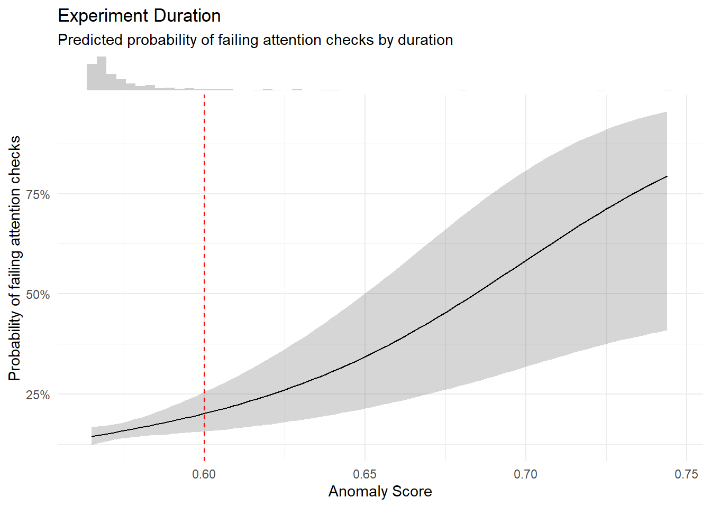
Code
exclude$anomaly <- as.character(dfchecks[dfchecks$AnomalyScore > quantile(dfchecks$AnomalyScore, 0.95), "Participant"])
exclude$anomaly <- exclude$anomaly[!exclude$anomaly %in% exclude$duration]
exclude$anomaly <- exclude$anomaly[!exclude$anomaly %in% exclude$checks]
length(c(exclude$anomaly, exclude$duration, exclude$checks))[1] 54Code
selected_features <- features |>
mutate(Cluster = ifelse(dfchecks$Participant %in% c(exclude$anomaly, exclude$duration, exclude$checks), "Excluded", "Valid")) |>
select(Cluster, starts_with("Duration"), starts_with("A_"), starts_with("cor_"), starts_with("Beauty_"))
var_names <- names(select(selected_features, -Cluster))
feature_pairs <- expand_grid(x_var = var_names, y_var = var_names)
feature_pairs <- feature_pairs |>
mutate(
triangle = case_when(
match(x_var, var_names) > match(y_var, var_names) ~ "lower",
match(x_var, var_names) == match(y_var, var_names) ~ "diag",
TRUE ~ "upper"
)
)
plot_data <- pmap_dfr(feature_pairs, function(x_var, y_var, triangle) {
selected_features |>
select(Cluster, x = all_of(x_var), y = all_of(y_var)) |>
mutate(x_var = x_var, y_var = y_var, triangle = triangle)
}) |>
mutate(
x_var = factor(x_var, levels = rev(var_names)),
y_var = factor(y_var, levels = rev(var_names))
)
diag_histograms <- map_dfr(var_names, function(var) {
# histogram bins computed globally for consistent breaks
breaks <- hist(selected_features[[var]], breaks = 20, plot = FALSE)$breaks
all_counts <- selected_features |>
group_by(Cluster) |>
summarise(counts = list(hist(!!sym(var), breaks = breaks, plot = FALSE)$counts),
.groups = "drop")
# max count across all clusters for this variable
max_count <- max(unlist(all_counts$counts), na.rm = TRUE)
y_range <- range(selected_features[[var]], na.rm = TRUE)
all_counts |>
unnest_wider(counts, names_sep = "_") |>
pivot_longer(starts_with("counts_"), names_to = "bin", values_to = "count") |>
mutate(
bin_id = as.integer(gsub("counts_", "", bin)),
x = breaks[-length(breaks)][bin_id],
xmax = breaks[-1][bin_id],
ymin = y_range[1],
ymax = ymin + (count / max_count) * diff(y_range),
var = var
) |>
select(x, xmax, ymin, ymax, var, Cluster)
}) |> mutate(
x_var = factor(var, levels = rev(var_names)),
y_var = factor(var, levels = rev(var_names))
)
ggplot(plot_data, aes(x = x)) +
# stat_density_2d_filled(data = filter(plot_data, triangle == "lower", x_var != "AttentionCheck", y_var != "AttentionCheck"),
# aes(y = y, fill = after_stat(nlevel)), show.legend = FALSE) +
# scale_fill_gradient(low = "white", high = "darkgreen") +
# ggnewscale::new_scale_fill() +
geom_point2(data = filter(plot_data, triangle == "lower"),
aes(y = y, color = Cluster), alpha = 0.7, size = 3, shape = "+") +
geom_rect(data = diag_histograms,
aes(xmin = x, xmax = xmax, ymin = ymin, ymax = ymax, fill = Cluster),
colour = NA, alpha = 0.5) +
geom_blank(data = filter(plot_data, triangle != "lower")) +
facet_grid(y_var ~ x_var, scales = "free", switch = "both") +
# scale_color_gradient(low = "black", high = "red") +
labs(color = "Participants", fill = "Participants") +
theme_minimal() +
theme(strip.placement = "outside",
strip.text.x = element_text(angle = 45, hjust = 1, vjust = 1),
axis.title = element_blank())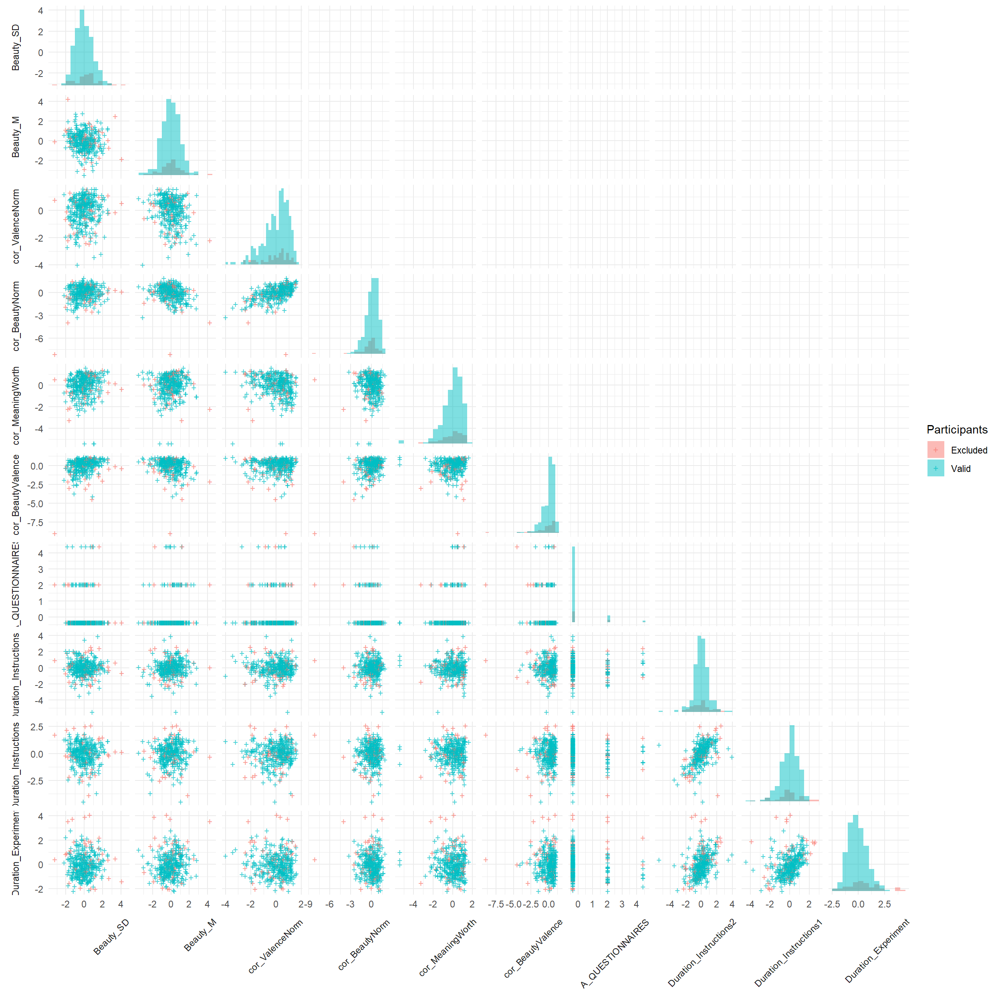
Self-Reported Quality
Code
dfchecks$SubjectiveQuality <- df$Experiment_Quality
dfchecks |>
ggplot(aes(x = SubjectiveQuality, y = A_TASK)) +
geom_jitter(width = 0) +
geom_smooth(method = "lm") `geom_smooth()` using formula = 'y ~ x'Warning: Removed 30 rows containing non-finite outside the scale range
(`stat_smooth()`).Warning: Removed 30 rows containing missing values or values outside the scale range
(`geom_point()`).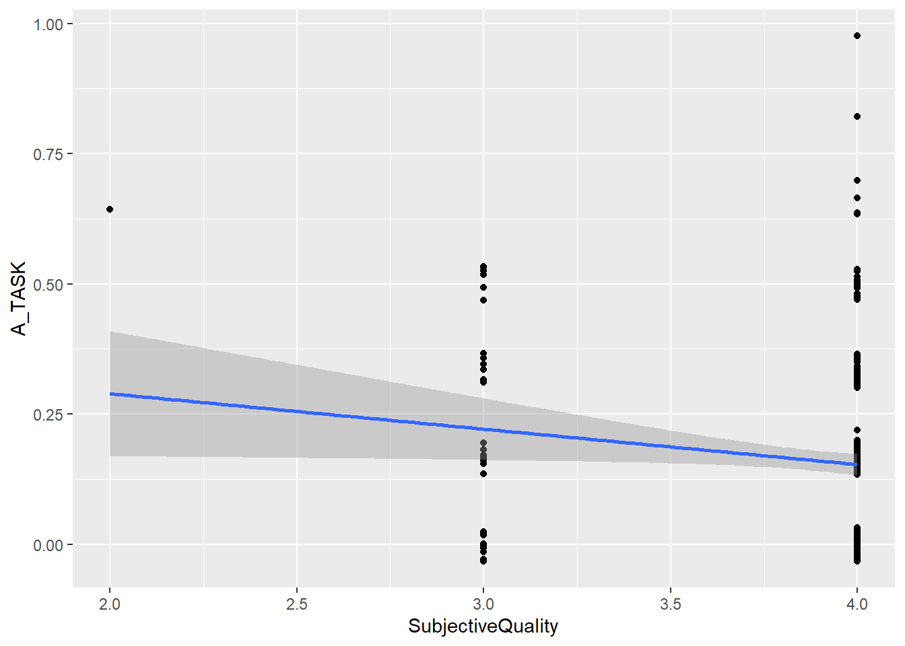
Effect of Exclusion
Code
dftask |>
select(Participant, Beauty, Valence, Meaning, Worth, Reality, Authenticity) |>
pivot_longer(-Participant, names_to = "Variable", values_to = "Value") |>
ggplot(aes(x = Value)) +
geom_histogram(aes(fill = Variable, y = after_stat(density)), bins = 30, position = "identity") +
facet_wrap(~Variable, scales = "free") 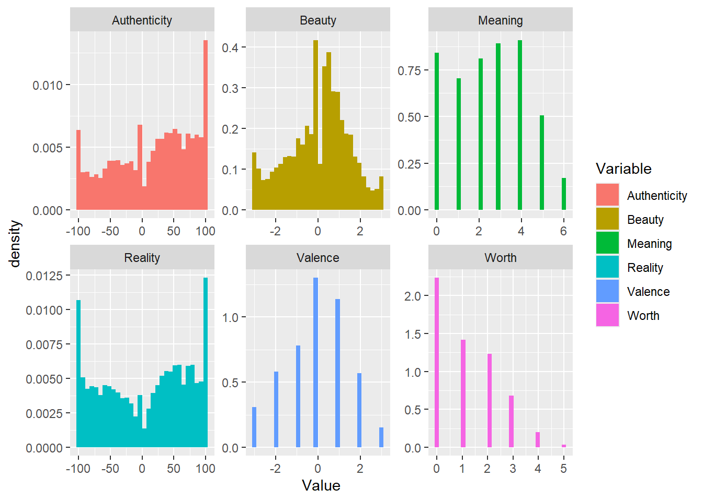
Code
library(glmmTMB)
dftask <- mutate(dftask, Condition = fct_relevel(Condition, "Human Original", "Human Forgery", "AI-Generated"))
quick_test <- function(what = "Beauty", family = "gaussian", exclude = c()){
f <- as.formula(paste0(what, " ~ Condition + (1 + Condition|Participant)"))
if(family == "ordbeta") {
dat <- normalize(dftask, select = what)
} else {
dat <- dftask
}
m <- glmmTMB::glmmTMB(f, data = dat, family = family)
params <- parameters::parameters(m, effects = "fixed")
m2 <- glmmTMB::glmmTMB(f, data = filter(dat, !Participant %in% exclude), family = family)
params2 <- parameters::parameters(m2, effects = "fixed")
params$Coefficient_Excluded <- params2$Coefficient
params$p_Excluded <- format_p(params2$p, name = NULL)
params$Result <- ifelse(params$p_Excluded < params$p, "Exclude", "Original")
p <- estimate_means(m, by = "Condition") |>
mutate(Exclusion = "Whole sample") |>
rbind(estimate_means(m2, by = "Condition") |>
mutate(Exclusion = "Excluded"))
if("Proportion" %in% names(p)) p <- datawizard::data_rename(p, "Proportion", "Mean")
p <- p |>
ggplot(aes(x = Condition, y = Mean, color = Exclusion, group = Exclusion)) +
geom_line(position = position_dodge(width = 0.1)) +
geom_pointrange(aes(ymin = CI_low, ymax = CI_high), position = position_dodge(width = 0.1), size = 1)
list(params = display(select(params, Parameter, Coefficient, Coefficient_Excluded, p, p_Excluded, Result)),
plot = p)
}Code
rez <- quick_test(what = "Beauty", family = "gaussian", exclude = c(exclude$anomaly, exclude$duration, exclude$checks))
rez$params| Parameter | Coefficient | Coefficient_Excluded | p | p_Excluded | Result |
|---|---|---|---|---|---|
| (Intercept) | 0.23 | 0.22 | < .001 | < .001 | Exclude |
| ConditionHuman Forgery | -0.21 | -0.22 | < .001 | < .001 | Exclude |
| ConditionAI-Generated | -0.36 | -0.38 | < .001 | < .001 | Exclude |
Code
rez$plot 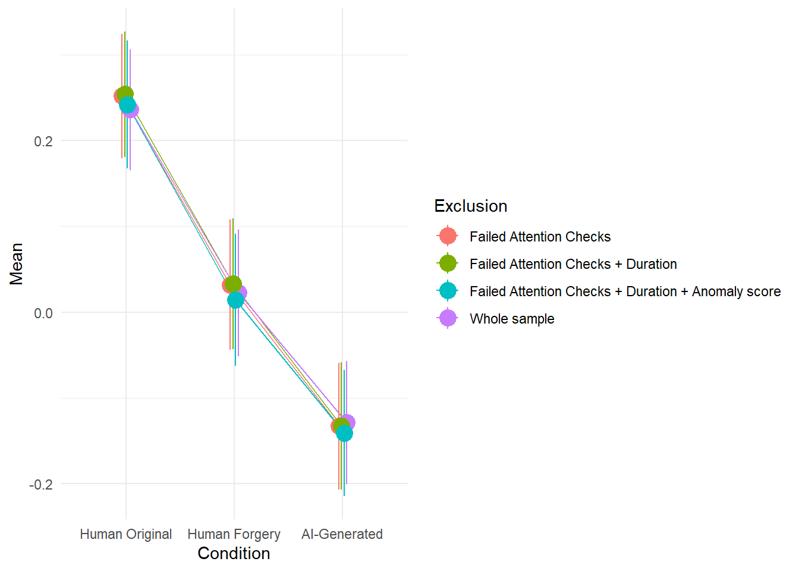
Code
rez <- quick_test(what = "Beauty", family = "ordbeta", exclude = c(exclude$anomaly, exclude$duration, exclude$checks))
rez$params| Parameter | Coefficient | Coefficient_Excluded | p | p_Excluded | Result |
|---|---|---|---|---|---|
| (Intercept) | 0.14 | 0.13 | < .001 | < .001 | Exclude |
| ConditionHuman Forgery | -0.14 | -0.15 | < .001 | < .001 | Exclude |
| ConditionAI-Generated | -0.25 | -0.26 | < .001 | < .001 | Exclude |
Code
rez$plot 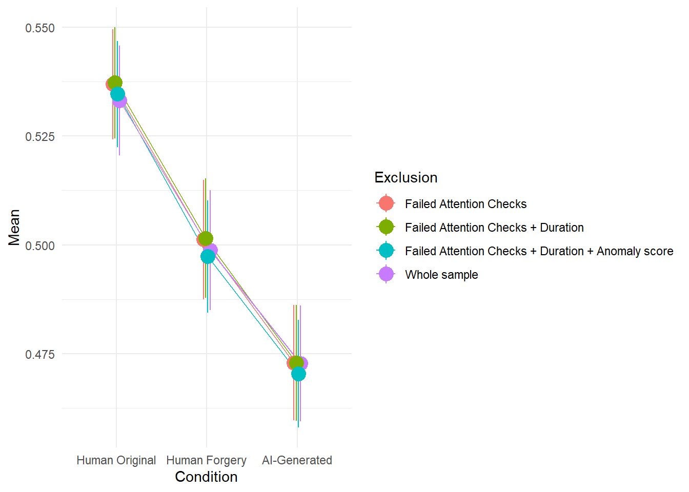
Code
rez <- quick_test(what = "Valence", family = "gaussian", exclude = c(exclude$anomaly, exclude$duration, exclude$checks))
rez$params| Parameter | Coefficient | Coefficient_Excluded | p | p_Excluded | Result |
|---|---|---|---|---|---|
| (Intercept) | 0.17 | 0.14 | < .001 | < .001 | Exclude |
| ConditionHuman Forgery | -0.22 | -0.22 | < .001 | < .001 | Exclude |
| ConditionAI-Generated | -0.38 | -0.39 | < .001 | < .001 | Exclude |
Code
rez$plot 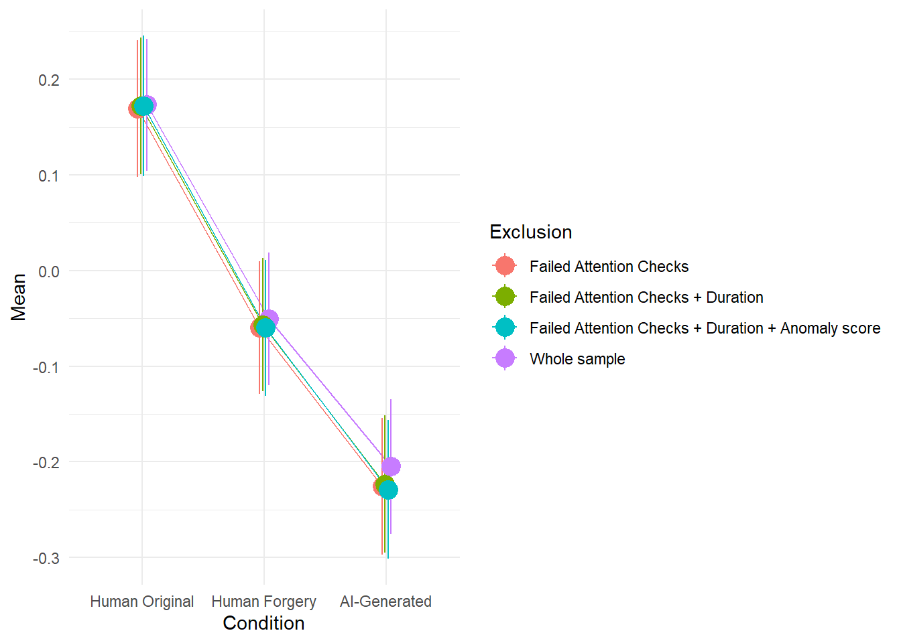
Code
rez <- quick_test(what = "Valence", family = "ordbeta", exclude = c(exclude$anomaly, exclude$duration, exclude$checks))
rez$params| Parameter | Coefficient | Coefficient_Excluded | p | p_Excluded | Result |
|---|---|---|---|---|---|
| (Intercept) | 0.16 | 0.14 | < .001 | < .001 | Exclude |
| ConditionHuman Forgery | -0.12 | -0.12 | < .001 | < .001 | Exclude |
| ConditionAI-Generated | -0.20 | -0.21 | < .001 | < .001 | Exclude |
Code
rez$plot 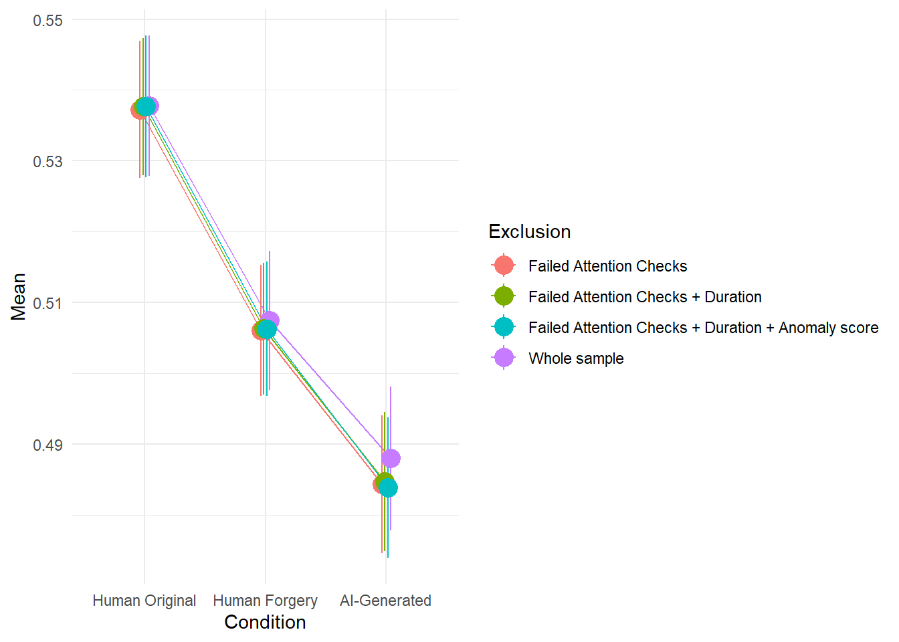
Code
rez <- quick_test(what = "Meaning", family = "gaussian", exclude = c(exclude$anomaly, exclude$duration, exclude$checks))
rez$params| Parameter | Coefficient | Coefficient_Excluded | p | p_Excluded | Result |
|---|---|---|---|---|---|
| (Intercept) | 2.81 | 2.76 | < .001 | < .001 | Exclude |
| ConditionHuman Forgery | -0.27 | -0.28 | < .001 | < .001 | Exclude |
| ConditionAI-Generated | -0.60 | -0.63 | < .001 | < .001 | Exclude |
Code
rez$plot 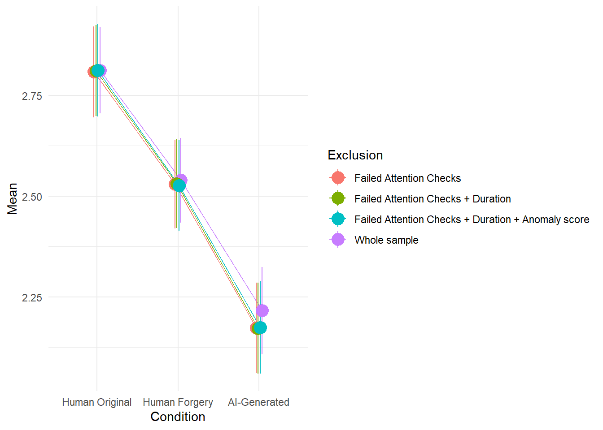
Code
rez <- quick_test(what = "Meaning", family = "ordbeta", exclude = c(exclude$anomaly, exclude$duration, exclude$checks))
rez$params| Parameter | Coefficient | Coefficient_Excluded | p | p_Excluded | Result |
|---|---|---|---|---|---|
| (Intercept) | 0.02 | -2.58e-03 | 0.475 | 0.938 | Original |
| ConditionHuman Forgery | -0.15 | -0.16 | < .001 | < .001 | Exclude |
| ConditionAI-Generated | -0.33 | -0.36 | < .001 | < .001 | Exclude |
Code
rez$plot 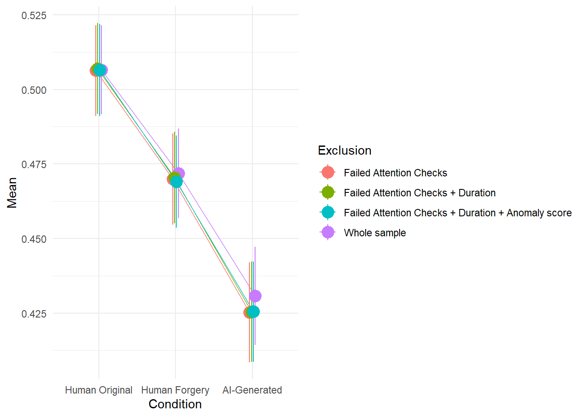
Code
rez <- quick_test(what = "Worth", family = "poisson", exclude = c(exclude$anomaly, exclude$duration, exclude$checks))
rez$params| Parameter | Coefficient | Coefficient_Excluded | p | p_Excluded | Result |
|---|---|---|---|---|---|
| (Intercept) | 0.18 | 0.15 | < .001 | < .001 | Exclude |
| ConditionHuman Forgery | -0.34 | -0.35 | < .001 | < .001 | Exclude |
| ConditionAI-Generated | -0.62 | -0.67 | < .001 | < .001 | Exclude |
Code
rez$plot 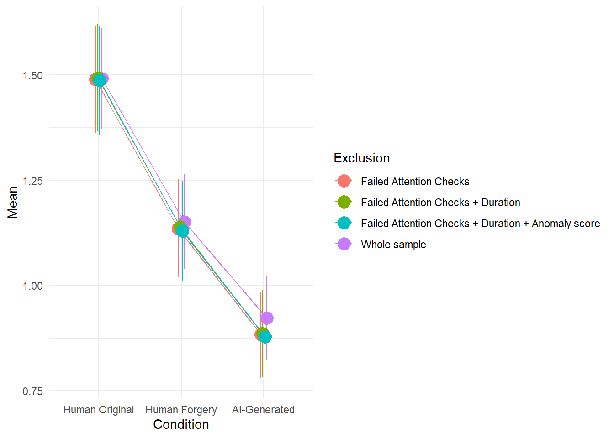
Code
rez <- quick_test(what = "Reality", family = "gaussian", exclude = c(exclude$anomaly, exclude$duration, exclude$checks))Warning in finalizeTMB(TMBStruc, obj, fit, h, data.tmb.old): Model convergence
problem; non-positive-definite Hessian matrix. See vignette('troubleshooting')
Warning in finalizeTMB(TMBStruc, obj, fit, h, data.tmb.old): Model convergence
problem; non-positive-definite Hessian matrix. See vignette('troubleshooting')The variance-covariance matrix is not positive definite. Returning the
nearest positive definite matrix now.
This ensures that eigenvalues are all positive real numbers, and
thereby, for instance, it is possible to calculate standard errors for
all relevant parameters.
The variance-covariance matrix is not positive definite. Returning the
nearest positive definite matrix now.
This ensures that eigenvalues are all positive real numbers, and
thereby, for instance, it is possible to calculate standard errors for
all relevant parameters.Code
rez$params| Parameter | Coefficient | Coefficient_Excluded | p | p_Excluded | Result |
|---|---|---|---|---|---|
| (Intercept) | 10.68 | 11.38 | < .001 | < .001 | Exclude |
| ConditionHuman Forgery | -3.61 | -3.12 | 0.002 | 0.014 | Original |
| ConditionAI-Generated | -11.29 | -11.00 | < .001 | < .001 | Exclude |
Code
rez$plot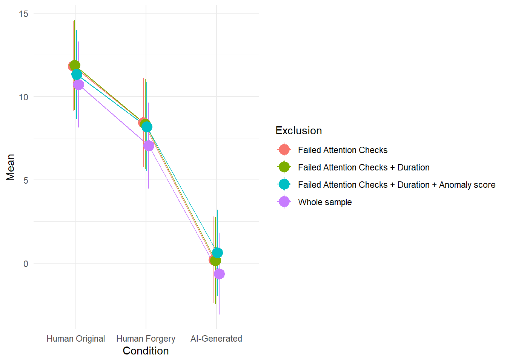
Code
rez <- quick_test(what = "Reality", family = "ordbeta", exclude = c(exclude$anomaly, exclude$duration, exclude$checks))Warning in finalizeTMB(TMBStruc, obj, fit, h, data.tmb.old): Model convergence
problem; singular convergence (7). See vignette('troubleshooting'),
help('diagnose')
Warning in finalizeTMB(TMBStruc, obj, fit, h, data.tmb.old): Model convergence
problem; non-positive-definite Hessian matrix. See vignette('troubleshooting')Warning in finalizeTMB(TMBStruc, obj, fit, h, data.tmb.old): Model convergence
problem; singular convergence (7). See vignette('troubleshooting'),
help('diagnose')The variance-covariance matrix is not positive definite. Returning the
nearest positive definite matrix now.
This ensures that eigenvalues are all positive real numbers, and
thereby, for instance, it is possible to calculate standard errors for
all relevant parameters.Code
rez$params| Parameter | Coefficient | Coefficient_Excluded | p | p_Excluded | Result |
|---|---|---|---|---|---|
| (Intercept) | 0.21 | 0.22 | < .001 | < .001 | Exclude |
| ConditionHuman Forgery | -0.06 | -0.05 | 0.004 | 0.017 | Original |
| ConditionAI-Generated | -0.20 | -0.19 | < .001 | < .001 | Exclude |
Code
rez$plot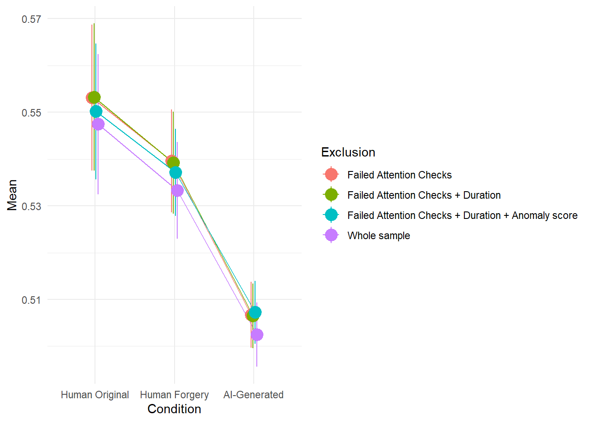
Code
rez <- quick_test(what = "Authenticity", family = "gaussian", exclude = c(exclude$anomaly, exclude$duration, exclude$checks))Warning in finalizeTMB(TMBStruc, obj, fit, h, data.tmb.old): Model convergence
problem; non-positive-definite Hessian matrix. See vignette('troubleshooting')
Warning in finalizeTMB(TMBStruc, obj, fit, h, data.tmb.old): Model convergence
problem; non-positive-definite Hessian matrix. See vignette('troubleshooting')The variance-covariance matrix is not positive definite. Returning the
nearest positive definite matrix now.
This ensures that eigenvalues are all positive real numbers, and
thereby, for instance, it is possible to calculate standard errors for
all relevant parameters.
The variance-covariance matrix is not positive definite. Returning the
nearest positive definite matrix now.
This ensures that eigenvalues are all positive real numbers, and
thereby, for instance, it is possible to calculate standard errors for
all relevant parameters.Code
rez$params| Parameter | Coefficient | Coefficient_Excluded | p | p_Excluded | Result |
|---|---|---|---|---|---|
| (Intercept) | 19.73 | 19.83 | < .001 | < .001 | Exclude |
| ConditionHuman Forgery | -4.25 | -4.52 | < .001 | < .001 | Exclude |
| ConditionAI-Generated | -3.88 | -4.14 | < .001 | < .001 | Exclude |
Code
rez$plot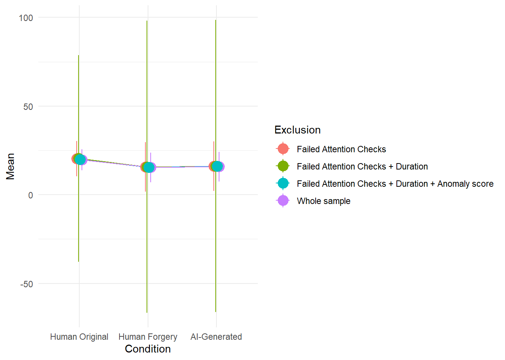
Code
rez <- quick_test(what = "Authenticity", family = "ordbeta", exclude = c(exclude$anomaly, exclude$duration, exclude$checks))Warning in finalizeTMB(TMBStruc, obj, fit, h, data.tmb.old): Model convergence
problem; non-positive-definite Hessian matrix. See vignette('troubleshooting')
Warning in finalizeTMB(TMBStruc, obj, fit, h, data.tmb.old): Model convergence
problem; non-positive-definite Hessian matrix. See vignette('troubleshooting')The variance-covariance matrix is not positive definite. Returning the
nearest positive definite matrix now.
This ensures that eigenvalues are all positive real numbers, and
thereby, for instance, it is possible to calculate standard errors for
all relevant parameters.
The variance-covariance matrix is not positive definite. Returning the
nearest positive definite matrix now.
This ensures that eigenvalues are all positive real numbers, and
thereby, for instance, it is possible to calculate standard errors for
all relevant parameters.Code
rez$params| Parameter | Coefficient | Coefficient_Excluded | p | p_Excluded | Result |
|---|---|---|---|---|---|
| (Intercept) | 0.42 | 0.40 | < .001 | < .001 | Exclude |
| ConditionHuman Forgery | -0.06 | -0.07 | 0.001 | < .001 | Exclude |
| ConditionAI-Generated | -0.05 | -0.07 | 0.012 | 0.002 | Exclude |
Code
rez$plot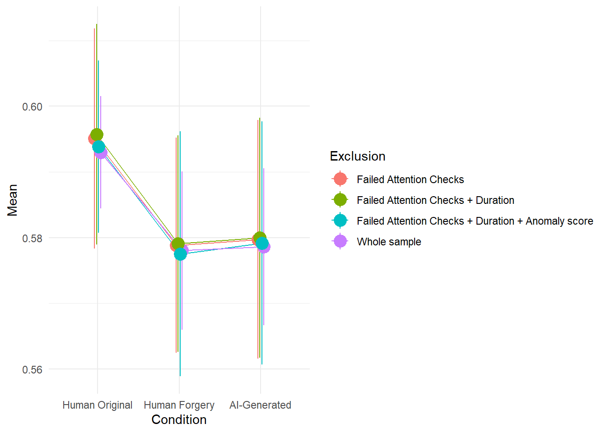
Exclude
df <- filter(df, !Participant %in% c(exclude$anomaly, exclude$duration, exclude$checks))
dftask <- filter(dftask, !Participant %in% c(exclude$anomaly, exclude$duration, exclude$checks))Manipulation Check
Did participant doubt the cover story?
Post-task Check
Code
manipcheck <- df |>
select(Participant, Feedback_ConfidenceReal, Feedback_ConfidenceAI) |>
pivot_longer(-Participant, values_to = "Confidence", names_to = "Answer") |>
filter(!is.na(Confidence)) |>
mutate(Answer = ifelse(str_detect(Answer, "Real"), "All images are real", "All images are fake"))
manipcheck |>
ggplot(aes(x=Confidence, fill=Answer)) +
geom_bar() +
facet_grid(~Answer) +
theme_minimal() +
theme(legend.position = "none") 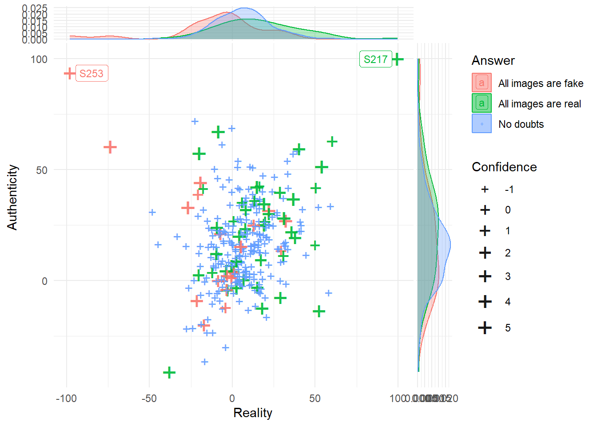
Code
manipcheck |>
summarize(N = n(),
Prop = n() / nrow(df),
Mean_Confidence = mean(Confidence, na.rm = TRUE),
SD_Confidence = sd(Confidence, na.rm = TRUE),
.by = "Answer") |>
gt::gt() |>
gt::fmt_auto() |>
gt::opt_stylize()| Answer | N | Prop | Mean_Confidence | SD_Confidence |
|---|---|---|---|---|
| All images are real | 44 | 0.144 | 2.568 | 1.336 |
| All images are fake | 20 | 0.066 | 2.8 | 1.105 |
Code
df <- manipcheck |>
mutate(Confidence = Confidence + 1,
Confidence = ifelse(Answer == "All images are fake", -Confidence, Confidence)) |>
select(Participant, ManipulationDistrust=Confidence) |>
right_join(df, by = "Participant") |>
arrange(Participant) |>
mutate(ManipulationDistrust = ifelse(is.na(ManipulationDistrust), 0, ManipulationDistrust))We added the manipulation distrust as a variable (“all images are fake”: -5 to -1, “all images are real”: 1 to 5).
Code
df_belief <- dftask |>
summarize(
# Reality = sum(Reality > 0) / n(),
# Authenticity = sum(Authenticity > 0) / n(),
Reality = mean(Reality, na.rm=TRUE),
Authenticity = mean(Authenticity, na.rm=TRUE),
.by=c("Participant")) |>
full_join(manipcheck, by = "Participant") |>
mutate(Confidence = ifelse(is.na(Answer), -1, Confidence),
Answer = ifelse(is.na(Answer), "No doubts", Answer))
df_belief |>
ggplot(aes(x = Reality, y = Authenticity, color = Answer)) +
geom_jitter(aes(size=Confidence), shape = "+", width = 0.01, height=0.01, alpha = 0.9) +
ggrepel::geom_label_repel(data = filter(df_belief, abs(Reality) > 95 | abs(Authenticity) > 95),
aes(label = Participant), size = 3) +
ggside::geom_xsidedensity(aes(fill=Answer), alpha=0.3) +
ggside::geom_ysidedensity(aes(fill=Answer), alpha=0.3) +
ggside::theme_ggside_void() +
theme_minimal() +
scale_size_continuous(range = c(4, 8)) 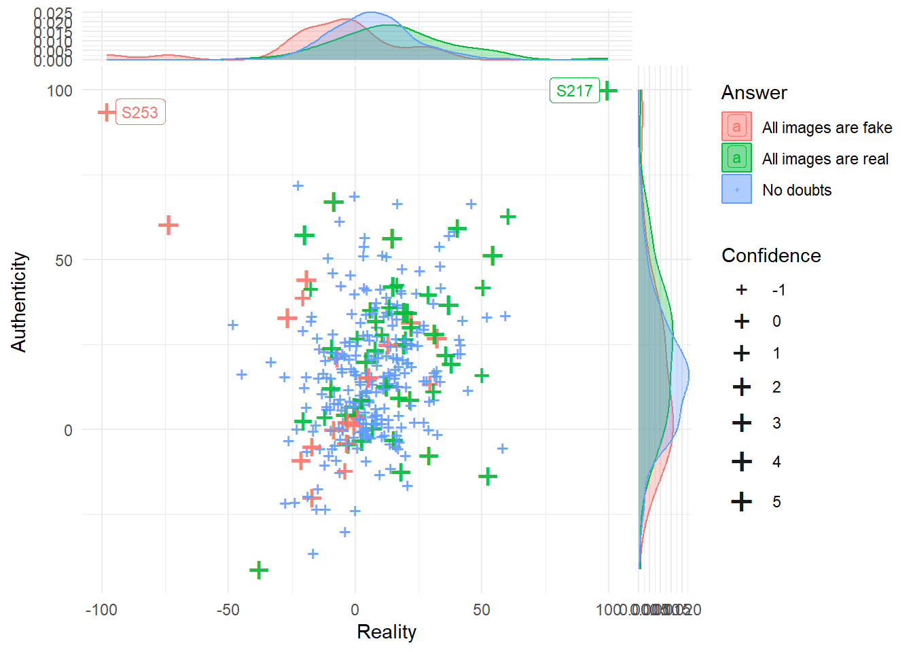
Code
exclude$phase2 <- filter(df_belief, Reality > 90 | Authenticity > 90)$ParticipantExpressing cover story doubts in the post-task check was not associated with answers consistent with these doubts in the phase 2 assessments. In other words, participants that ticked “I think all images were real/fake” did not actually rate all images as being real or fake, aside from 2 participants, which had their phase 2 data dropped due to lack of variability.
Phase 2 Instruction Misunderstanding
Did they misunderstand phase 2 and thought it was a recognition task?
Code
phase2congruence <- dftask |>
summarize(Reality = sum(Reality > 0) / n(), Authenticity = sum(Authenticity > 0) / n(),
# Reality = mean(Reality), Authenticity = mean(Authenticity),
.by=c("Participant", "Condition")) |>
pivot_wider(names_from = Condition, values_from = c(Reality, Authenticity)) |>
# mutate(CongruentReality = (Reality_Human + Reality_AI) / 2,
# CongruentAuthenticity = (Authenticity_Human + Authenticity_Forgery) / 2) |>
full_join(select(df, Participant, Duration_TaskInstructions2), by = "Participant") |>
full_join(manipcheck, by = "Participant") |>
mutate(Confidence = ifelse(is.na(Answer), -1, Confidence),
Answer = ifelse(is.na(Answer), "No doubts", Answer)) |>
mutate(Mean_Congruence = (`Reality_Human Original` + (1 - `Reality_AI-Generated`) + (1 - `Authenticity_Human Forgery`) + `Authenticity_Human Original`) / 4) |>
arrange(desc(Mean_Congruence))
phase2congruence |>
ggplot(aes(x=Mean_Congruence)) +
geom_histogram(bins = 20)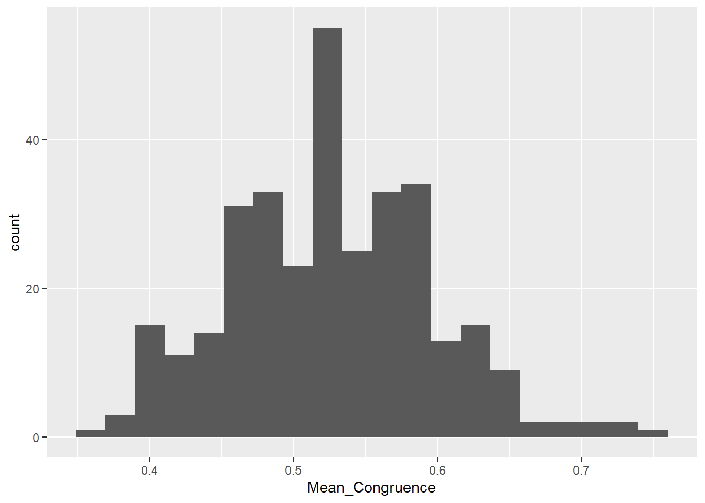
Code
phase2congruence |>
ggplot(aes(x = `Reality_Human Original`, y = `Authenticity_Human Original`, color = Answer)) +
geom_jitter(aes(size=Confidence), shape = "+", width = 0.01, height=0.01, alpha = 0.9) +
ggrepel::geom_label_repel(data = filter(phase2congruence, `Reality_Human Original` > 0.95 | `Authenticity_Human Original` > 0.95),
aes(label = Participant), size = 3) +
ggside::geom_xsidedensity(aes(fill=Answer), alpha=0.3) +
ggside::geom_ysidedensity(aes(fill=Answer), alpha=0.3) +
ggside::theme_ggside_void() +
theme_minimal() +
scale_size_continuous(range = c(4, 8)) 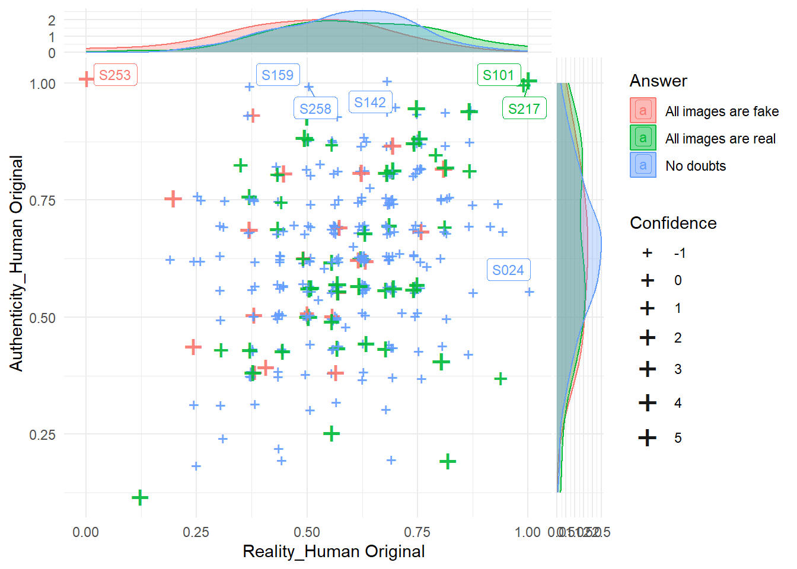
Code
# Note: we know for sure S024 (fghgugdaz0) is an outlier and thought it was recognitionCode
exclude$phase2[1] "S217" "S253"Code
# exclude$phase2_cong <- filter(phase2congruence, Reality_Human == 1 | Authenticity_Human == 1)$Participant
exclude$phase2_cong <- filter(phase2congruence, Mean_Congruence > 0.7 & !Participant %in% exclude$phase2)$Participant
dftask[dftask$Participant %in% c(exclude$phase2, exclude$phase2_cong), "Reality"] <- NA
dftask[dftask$Participant %in% c(exclude$phase2, exclude$phase2_cong), "Authenticity"] <- NABased on the distribution of congruency scores (i.e., the proportion of items presented as “Human Originals” rated as “Real” and items presented as “Forgeries” rated as “Copies”), we excluded 4 outlying participants’ data of phase 2.
Final Sample
The final sample includes 305 participants (Mean age = 42.0, SD = 12.9, range: [20, 82]; Gender: 51.5% women, 47.9% men, 0.66% non-binary; Education: Bachelor, 47.87%; Doctorate, 5.25%; High school, 30.16%; Master, 16.72%; Country: 75.08% United Kingdom, 20.00% United States, 4.92% other).
Code
p_age <- df |>
ggplot(aes(x = Age, fill = Gender)) +
geom_histogram(data=df, aes(x = Age, fill=Gender), binwidth = 3) +
geom_vline(xintercept = mean(df$Age), color = "red", linewidth=1, linetype="dashed") +
scale_fill_viridis_d() +
scale_x_continuous(expand = c(0, 0), breaks = seq(20, max(df$Age), by = 10 )) +
scale_y_continuous(expand = c(0, 0)) +
labs(title = "Age", y = "Number of Participants", color = NULL, subtitle = "Distribution of participants' age") +
theme_modern(axis.title.space = 10) +
theme(
plot.title = element_text(size = rel(1.2), face = "bold", hjust = 0),
plot.subtitle = element_text(size = rel(1.2), vjust = 7),
axis.text.y = element_text(size = rel(1.1)),
axis.text.x = element_text(size = rel(1.1)),
axis.title.x = element_blank()
)
p_age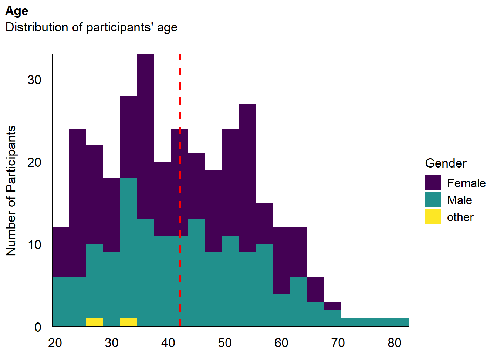
Code
p_edu <- df |>
mutate(Student = ifelse(is.na(Student) | (Student == FALSE), "Not studying", "Currently studying"),
Education = fct_relevel(Education, "High school", "Bachelor", "Master", "Doctorate")) |>
ggplot(aes(x = Education)) +
geom_bar(aes(fill = Student)) +
scale_y_continuous(expand = c(0, 0), breaks= scales::pretty_breaks()) +
labs(title = "Education", y = "Number of Participants", subtitle = "Participants per achieved education level", fill = "Is currently a student") +
see::scale_fill_bluebrown_d() +
theme_modern(axis.title.space = 15) +
theme(
plot.title = element_text(size = rel(1.2), face = "bold", hjust = 0),
plot.subtitle = element_text(size = rel(1.2)),
axis.text.y = element_text(size = rel(1.1)),
axis.text.x = element_text(size = rel(0.5), angle = 45, hjust =1),
axis.title.x = element_blank()
)
p_edu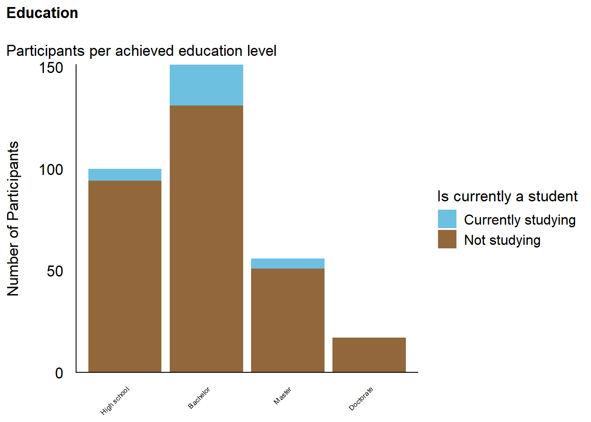
Code
p_eth <- df |>
mutate(Ethnicity = ifelse(is.na(Ethnicity), "Prefer not to answer", Ethnicity)) |>
mutate(Freq = format_percent(n() / nrow(df), digits=1), .by=Ethnicity) |>
mutate(Ethnicity = fct_infreq(paste0(Ethnicity, " (", Freq, ")"))) |>
ggplot(aes(x = "", fill = Ethnicity)) +
geom_bar() +
coord_polar("y") +
see::scale_fill_social_d() +
labs(title = "Ethnicity", subtitle = "Self-declared ethnicity") +
theme_minimal() +
theme(
axis.text.x = element_blank(),
axis.title.x = element_blank(),
axis.text.y = element_blank(),
axis.title.y = element_blank(),
plot.title = element_text(size = rel(1.2), face = "bold", hjust = 0),
plot.subtitle = element_text(size = rel(1.2))
)
p_eth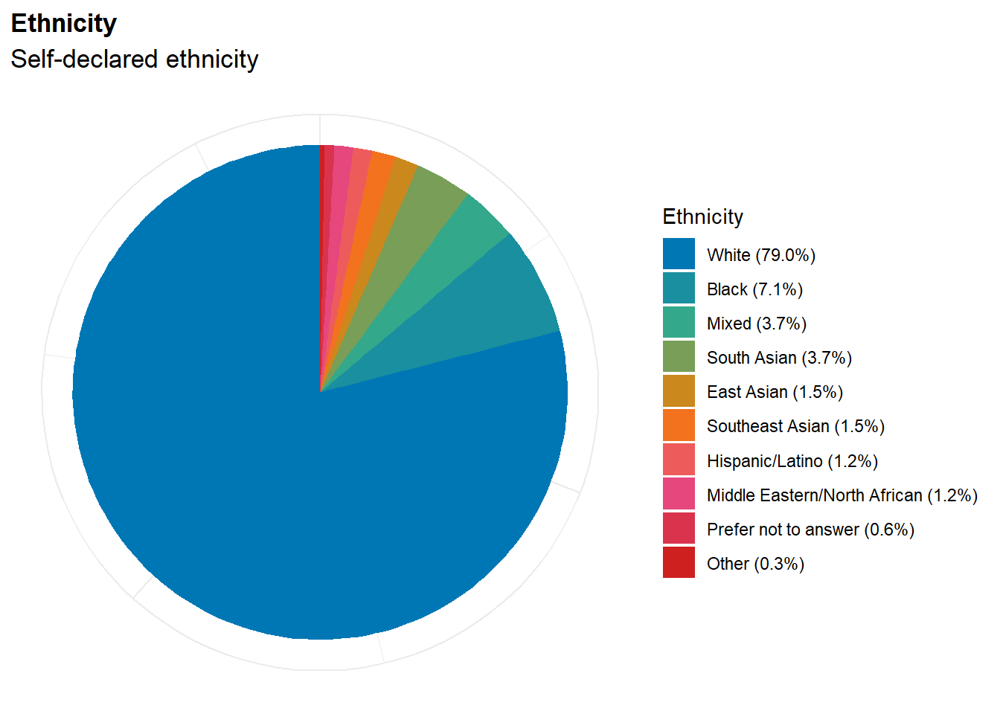
Code
p_map <- df |>
mutate(Country = case_when(
Country=="United States"~ "USA",
Country=="United Kingdom" ~ "UK",
TRUE ~ Country
))|>
dplyr::select(region = Country) |>
group_by(region) |>
summarize(n = n()) |>
right_join(map_data("world"), by = "region") |>
# mutate(n = replace_na(n, 0)) |>
ggplot(aes(long, lat, group = group)) +
geom_polygon(aes(fill = n)) +
scale_fill_gradientn(colors = c("#E66101", "#ca0020", "#cc66cc")) +
labs(fill = "N") +
theme_void() +
labs(title = "Country of Residence", subtitle = "Number of participants by country") +
theme(
plot.title = element_text(size = rel(1.2), face = "bold", hjust = 0),
plot.subtitle = element_text(size = rel(1.2))
) +
coord_fixed()
p_map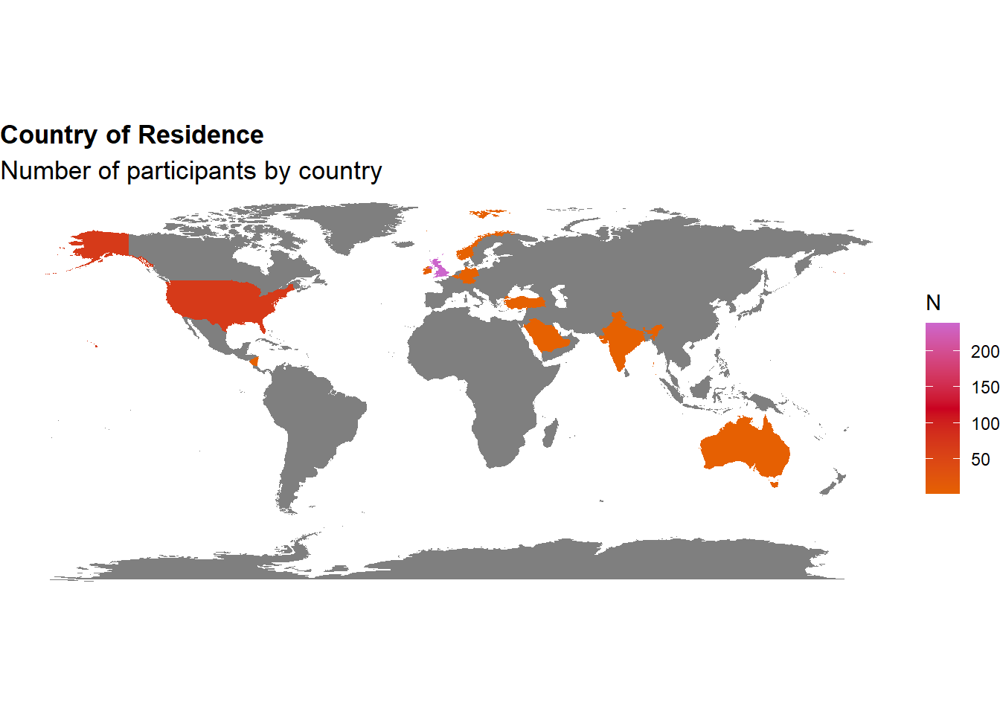
Code
sort(table(df$Country)) |>
as.data.frame() |>
rename(Country = Var1) |>
arrange(desc(Freq)) |>
gt::gt()| Country | Freq |
|---|---|
| United Kingdom | 229 |
| United States | 61 |
| Ireland | 4 |
| Australia | 3 |
| Belgium | 1 |
| Germany | 1 |
| India | 1 |
| Nicaragua | 1 |
| Norway | 1 |
| Saudi Arabia | 1 |
Code
(p_age / p_edu) | (p_map / p_eth) 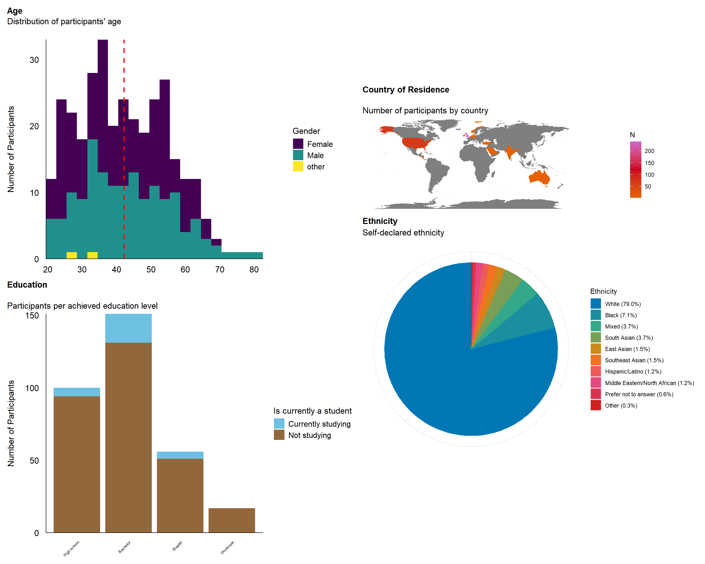
Save
Code
dftask <- dftask |>
left_join(select(df, Participant, ManipulationDistrust), by = c("Participant")) |>
left_join(select(read.csv("../data/rawdata_memory_task.csv"), Participant, Item, SelfRelevance, Beauty2), by = c("Participant", "Item")) |>
mutate(Emotion = paste0(ifelse(Norms_Valence < median(Norms_Valence), "Negative", "Positive"), ifelse(Norms_Arousal < median(Norms_Arousal), " - Low intensity", " - High intensity")),
Beauty = datawizard::rescale(Beauty, to = c(0, 1), range = c(-3, 3)),
Valence = datawizard::rescale(Valence, to = c(0, 1), range = c(-3, 3)),
Meaning = datawizard::rescale(Meaning, to = c(0, 1), range = c(0, 6)),
Worth = datawizard::rescale(Worth, to = c(0, 1), range = c(0, 5)),
Reality = datawizard::rescale(Reality, to = c(0, 1), range = c(-100, 100)),
Authenticity = datawizard::rescale(Authenticity, to = c(0, 1), range = c(-100, 100)),
Beauty2 = datawizard::rescale(Beauty2, to = c(0, 1), range = c(-3, 3)),
SelfRelevance = datawizard::rescale(SelfRelevance, to = c(0, 1), range = c(0, 6))
) |>
datawizard::normalize(select = c("Norms_Liking", "Norms_Valence", "Norms_Arousal", "Norms_Complexity", "Norms_Familiarity"))
write.csv(dftask, "../data/data_task.csv", row.names = FALSE)
dfmem <- read.csv("../data/rawdata_memory_task.csv")
# sum(!unique(dfmem$Participant) %in% df$Participant)
dfmem <- dfmem |>
filter(Participant %in% df$Participant) |>
select(-SelfRelevance, -Beauty2) |>
left_join(dftask, by = c("Participant", "Item")) |>
rename(AnswerCondition = SourceCondition, AnswerBelief = SourceBelief) |>
mutate(Type = ifelse(is.na(Condition), "New", "Old"),
Condition = ifelse(is.na(Condition), "New Items", as.character(Condition)),
AnswerCondition = ifelse(is.na(AnswerCondition), "Not recognized", AnswerCondition),
AnswerBelief = ifelse(is.na(AnswerBelief), "Not recognized", AnswerBelief),
Belief = case_when(
Reality >= 0.5 & Authenticity >= 0.5 ~ "Human Original",
Reality < 0.5 & Authenticity >= 0.5 ~ "AI Original",
Reality >= 0.5 & Authenticity < 0.5 ~ "Human Forgery",
Reality < 0.5 & Authenticity < 0.5 ~ "AI Copy",
.default = "None"
))
write.csv(dfmem, "../data/data_memory_task.csv", row.names = FALSE)
df |>
left_join(select(read.csv("../data/rawdata_memory_participants.csv"), Participant, Experiment_StartDate2 = Experiment_StartDate),
by = "Participant") |>
mutate(Delay = as.numeric(as.Date(Experiment_StartDate2) - as.Date(Experiment_StartDate))) |>
write.csv("../data/data_participants.csv", row.names = FALSE)
Comments
Code